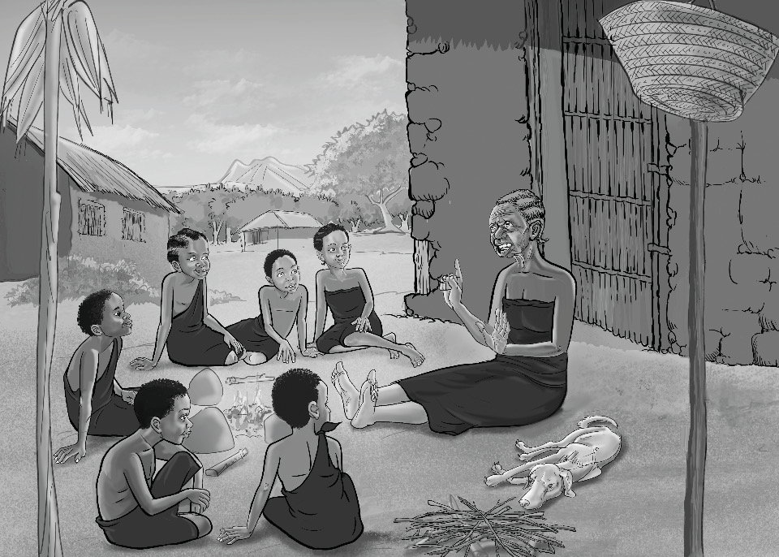

mila za heshima na unyenyekevu kupitia mafundisho ya kifamilia.

Kisiasa
(a) Mfumo wa uongozi wa jadi: Wakoloni walijaribu kudhoofisha mamlaka ya viongozi wa jadi kama machifu, wazee wa kimila na mabaraza ya kijadi kwa kuanzisha mfumo wa utawala wa kikoloni. Hata hivyo, jamii nyingi ziliendelea kuwaheshimu viongozi hawa na kuwashirikisha katika maamuzi ya kijamii. Machifu walihimiza mshikamano, utii wa sheria za kijadi na ulinzi wa rasilimali za jamii kama ardhi, misitu na maji. Kwa mfano, Mtwa Mkwawa wa Wahehe alipinga utawala wa Wajerumani na alitetea ardhi ya jamii yake isichukuliwe na wageni. Hii ilionesha jinsi viongozi wa jadi walivyotumia mamlaka yao kulinda maadili na rasilimali za jamii dhidi ya uporaji wa wakoloni.
(b) Vijana kushiriki katika mapambano dhidi ya ukoloni: Vijana walihamasishwa kushiriki katika harakati za kupinga ukoloni kupitia mafunzo ya jadi na mbinu za vita vya msituni. Katika Vita ya Maji maji, vijana walifundishwa mbinu za kivita za jadi kama matumizi ya mikuki, mishale na sumu ya asili dhidi ya adui. Viongozi wa jadi waliwapa vijana mafunzo ya ujasiri na uzalendo